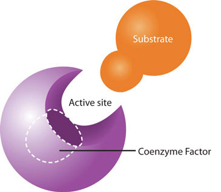

While the macronutrients (carbohydrates, lipids, and proteins) and alcohol can be catabolized to release energy, vitamins and minerals play a different kind of role in energy metabolism; they are required as functional parts of enzymes involved in energy release and storage. Vitamins and minerals that make up part of enzymes are referred to as coenzymesVitamins that make up part of enzymes required for converting a substrate to an end-product. and cofactorsMinerals that make up part of enzymes required for converting a substrate to an end-product., respectively. Coenzymes and cofactors are required by enzymes to catalyze a specific reaction. They assist in converting a substrate to an end-product (Figure 10.3). Coenzymes and cofactors are essential in catabolic pathways and play a role in many anabolic pathways too.
In addition to being essential for metabolism, many vitamins and minerals are required for blood renewal and function. At insufficient levels in the diet these vitamins and minerals impair the health of blood and consequently the delivery of nutrients in and wastes out, amongst its many other functions. In this section we will focus on the vitamins that take part in metabolism and blood function and renewal.
Figure 10.3
Coenzymes and cofactors are the particular vitamin or mineral required for enzymes to catalyze a specific reaction.
Thiamine is especially important in glucose metabolism. It acts as a cofactor for enzymes that break down glucose for energy production (Figure 10.3). Additionally, thiamine plays a role in the synthesis of ribose from glucose and is therefore required for RNA, DNA, and ATP synthesis. The brain and heart are most affected by a deficiency in thiamine. Thiamine deficiency, also known as beriberi, can cause symptoms of fatigue, confusion, movement impairment, pain in the lower extremities, swelling, and heart failure. It is prevalent in societies whose main dietary staple is white rice. During the processing of white rice, the bran is removed, along with what were called in the early nineteenth century, “accessory factors,” that are vital for metabolism. Dutch physician Dr. Christiaan Eijkman cured chickens of beriberi by feeding them unpolished rice bran in 1897. By 1912, Sir Frederick Gowland Hopkins determined from his experiments with animals that the “accessory factors,” eventually renamed vitamins, are needed in the diet to support growth, since animals fed a diet of pure carbohydrates, proteins, fats, and minerals failed to grow.Encyclopedia Brittanica Blog. “Frederick Gowland Hopkins and his “Accessory Food Factors.” Accessed October 1, 2011. http://www.britannica.com/blogs/2011/06/frederick-gowland-hopkins-accessory-food-factors/. Eijkman and Hopkins were awarded the Nobel Prize in Physiology (or Medicine) in 1929 for their discoveries in the emerging science of nutrition.
Riboflavin is an essential component of flavoproteins, which are coenzymes involved in many metabolic pathways of carbohydrate, lipid, and protein metabolism. Flavoproteins aid in the transfer of electrons in the electron transport chain. Furthermore, the functions of other B-vitamin coenzymes, such as vitamin B6 and folate, are dependent on the actions of flavoproteins. The “flavin” portion of riboflavin gives a bright yellow color to riboflavin, an attribute that help lead to its discovery as a vitamin. Riboflavin deficiency, sometimes referred to as ariboflavinosis, is often accompanied by other dietary deficiencies (most notably protein) and can be common in people that suffer from alcoholism. Its signs and symptoms include dry, scaly skin, mouth inflammation and sores, sore throat, itchy eyes, and light sensitivity.
Niacin is a component of the coenzymes NADH and NADPH, which are involved in the catabolism and/or anabolism of carbohydrates, lipids, and proteins. NADH is the predominant electron carrier and transfers electrons to the electron-transport chain to make ATP. NADPH is also required for the anabolic pathways of fatty-acid and cholesterol synthesis. In contrast to other vitamins, niacin can be synthesized by humans from the amino acid tryptophan in an anabolic process requiring enzymes dependent on riboflavin, vitamin B6, and iron. Niacin is made from tryptophan only after tryptophan has met all of its other needs in the body. The contribution of tryptophan-derived niacin to niacin needs in the body varies widely and a few scientific studies have demonstrated that diets high in tryptophan have very little effect on niacin deficiency. Niacin deficiency is commonly known as pellagra and is characterized by diarrhea, dermatitis, dementia, and sometimes death (see Note 10.24 "Video 10.3").
Figure 10.4
Vitamin B5 makes up coenzyme A, which carries the carbons of glucose, fatty acids, and amino acids into the citric acid cycle as Acetyl-CoA.
Pantothenic acid forms coenzyme A, which is the main carrier of carbon molecules in a cell. Acetyl-CoA is the carbon carrier of glucose, fatty acids, and amino acids into the citric acid cycle (Figure 10.4). Coenzyme A is also involved in the synthesis of lipids, cholesterol, and acetylcholine (a neurotransmitter). Vitamin B5 deficiency is exceptionally rare. Signs and symptoms include fatigue, irritability, numbness, muscle pain, and cramps. You may have seen pantothenic acid on many ingredients lists for skin and hair care products; however there is no good scientific evidence that pantothenic acid improves human skin or hair.
Pyroxidine is the coenzyme involved in nitrogen transfer between amino acids and therefore plays a role in amino-acid synthesis and catabolism. Also, it functions to release glucose from glycogen in the catabolic pathway of glycogenolysis and is required by enzymes for the synthesis of multiple neurotransmitters and hemoglobin. A deficiency in vitamin B6 can cause signs and symptoms of muscle weakness, dermatitis, mouth sores, fatigue, and confusion.
Vitamin B6 is a required coenzyme for the synthesis of hemoglobin. A deficiency in vitamin B6 can cause anemia, but it is of a different type than that caused by insufficient folate, cobalamin, or iron; although the symptoms are similar. The size of red blood cells is normal or somewhat smaller but the hemoglobin content is lower. This means each red blood cell has less capacity for carrying oxygen, resulting in muscle weakness, fatigue, and shortness of breath.
Biotin is required as a coenzyme in the citric acid cycle and in lipid metabolism. It is also required as an enzyme in the synthesis of glucose and some nonessential amino acids. A specific enzyme, biotinidase, is required to release biotin from protein so that it can be absorbed in the gut. There is some bacterial synthesis of biotin that occurs in the colon; however this is not a significant source of biotin. Biotin deficiency is rare, but can be caused by eating large amounts of egg whites over an extended period of time. This is because a protein in egg whites tightly binds to biotin making it unavailable for absorption. A rare genetic disease-causing malfunction of the biotinidase enzyme also results in biotin deficiency. Symptoms of biotin deficiency are similar to those of other B vitamins, but may also include hair loss when severe.
Folate is a required coenzyme for the synthesis of the amino acid methionine, and for making RNA and DNA. Therefore, rapidly dividing cells are most affected by folate deficiency. Red blood cells, white blood cells, and platelets are continuously being synthesized in the bone marrow from dividing stem cells. A consequence of folate deficiency is macrocytic, also called megaloblastic, anemia. Macrocytic and megaloblastic mean “big cell,” and anemia refers to fewer red blood cells or red blood cells containing less hemoglobin. Macrocytic anemia is characterized by larger and fewer red blood cells. It is caused by red blood cells being unable to produce DNA and RNA fast enough—cells grow but do not divide, making them large in size.
Figure 10.5
Spina bifida is a neural-tube defect that can have severe health consequences.
Folate is especially essential for the growth and specialization of cells of the central nervous system. Children whose mothers were folate-deficient during pregnancy have a higher risk of neural-tube birth defects. Folate deficiency is causally linked to the development of spina bifida, a neural-tube defect that occurs when the spine does not completely enclose the spinal cord. Spina bifida can lead to many physical and mental disabilities (Figure 10.5). Observational studies show that the prevalence of neural-tube defects was decreased after the fortification of enriched cereal grain products with folate in 1996 in the United States (and 1998 in Canada) compared to before grain products were fortified with folate (Figure 10.5). Additionally, results of clinical trials have demonstrated that neural-tube defects are significantly decreased in the offspring of mothers who began taking folate supplements one month prior to becoming pregnant and throughout the pregnancy. In response to the scientific evidence, the Food and Nutrition Board of the Institute of Medicine (IOM) raised the RDA for folate to 600 micrograms per day for pregnant women. Some were concerned that higher folate intakes may cause colon cancer, however scientific studies refute this hypothesis.
Cobalamin contains cobalt, making it the only vitamin that contains a metal ion. Cobalamin is an essential part of coenzymes. It is necessary for fat and protein catabolism, for folate coenzyme function, and for hemoglobin synthesis. An enzyme requiring cobalamin is needed by a folate-dependent enzyme to synthesize DNA. Thus, a deficiency in cobalamin has similar consequences to health as folate deficiency. In children and adults cobalamin deficiency causes macrocytic anemia, and in babies born to cobalamin-deficient mothers there is an increased risk for neural-tube defects. In order for the human body to absorb cobalamin, the stomach, pancreas, and small intestine must be functioning properly. Cells in the stomach secrete a protein called intrinsic factor that is necessary for cobalamin absorption, which occurs in the small intestine. Impairment of secretion of this protein either caused by an autoimmune disease or by chronic inflammation of the stomach (such as that occurring in some people with H.pylori infection), can lead to the disease pernicious anemia, a type of macrocytic anemia. Vitamin B12 malabsorption is most common in the elderly, who may have impaired functioning of digestive organs, a normal consequence of aging. Pernicious anemia is treated by large oral doses of vitamin B12 or by putting the vitamin under the tongue, where it is absorbed into the blood stream without passing through the intestine. In patients that do not respond to oral or sublingual treatment vitamin B12 is given by injection.
A summary of the prominent functions of the B vitamins in metabolism and blood function, and their deficiency syndromes is given in Table 10.3 "B-Vitamin Functions in Metabolism and Blood, and Deficiency Syndromes".
Table 10.3 B-Vitamin Functions in Metabolism and Blood, and Deficiency Syndromes
| B Vitamin | Function | Deficiency: Signs and Symptoms |
|---|---|---|
| B1 (thiamine) | Coenzyme: assists in glucose metabolism, RNA, DNA, and ATP synthesis | Beriberi: fatigue, confusion, movement impairment, swelling, heart failure |
| B2 (riboflavin) | Coenzyme: assists in glucose, fat and carbohydrate metabolism, electron carrier, other B vitamins are dependent on | Ariboflavinosis: dry scaly skin, mouth inflammation and sores, sore throat, itchy eyes, light sensitivity |
| B3 (niacin) | Coenzyme: assists in glucose, fat, and protein metabolism, electron carrier | Pellagra: diarrhea, dermatitis, dementia, death |
| B5 (pantothenic acid) | Coenzyme: assists in glucose, fat, and protein metabolism, cholesterol and neurotransmitter synthesis | Muscle numbness and pain, fatigue, irritability |
| B6 (pyroxidine) | Coenzyme; assists in amino-acid synthesis, glycogneolysis, neurotransmitter and hemoglobin synthesis | Muscle weakness, dermatitis, mouth sores, fatigue, confusion |
| Biotin | Coenzyme; assists in glucose, fat, and protein metabolism, amino-acid synthesis | Muscle weakness, dermatitis, fatigue, hair loss |
| Folate | Coenzyme; amino acid synthesis, RNA, DNA, and red blood cell synthesis | Diarrhea, mouth sores, confusion, anemia, neural-tube defects |
| B12 (cobalamin) | Coenzyme; fat and protein catabolism, folate function, red-blood-cell synthesis | Muscle weakness, sore tongue, anemia, nerve damage, neural-tube defects |
Although some marketers claim taking a vitamin that contains one-thousand times the daily value of certain B vitamins boosts energy and performance, this is a myth that is not backed by science. The “feeling” of more energy from energy-boosting supplements stems from the high amount of added sugars, caffeine, and other herbal stimulants that accompany the high doses of B vitamins. As discussed, B vitamins are needed to support energy metabolism and growth, but taking in more than required does not supply you with more energy. A great analogy of this phenomenon is the gas in your car. Does it drive faster with a half-tank of gas or a full one? It does not matter; the car drives just as fast as long as it has gas. Similarly, depletion of B vitamins will cause problems in energy metabolism, but having more than is required to run metabolism does not speed it up. Buyers of B-vitamin supplements beware; B vitamins are not stored in the body and all excess will be flushed down the toilet along with the extra money spent.
B vitamins are naturally present in numerous foods, and many other foods are enriched with them. In the United States, B-vitamin deficiencies are rare; however in the nineteenth century some vitamin-B deficiencies plagued many people in North America. Remember the video in Chapter 1 "Nutrition and You" on niacin deficiency? Niacin deficiency, also known as pellagra, was prominent in poorer Americans whose main dietary staple was refined cornmeal (watch it again, Note 10.24 "Video 10.3"). Its symptoms were severe and included diarrhea, dermatitis, dementia, and even death. Some of the health consequences of pellagra are the result of niacin being in insufficient supply to support the body’s metabolic functions.
Pellagra Video
(click to see video)Review this video on how Dr. Joseph Goldberger discovered that pellagra was a diet-related illness.
B vitamins are water-soluble and are not stored in significant amounts in the body. Therefore, they must be continuously obtained from the diet. Fortunately, B vitamins are generally well-absorbed in the gut. The Recommended Dietary Allowances (RDA) or Adequate Intakes (AI) set by the IOM, for the B vitamins are listed in Table 10.4 "Dietary Reference Intakes and Food Sources for B Vitamins", which also gives some dietary sources for these micronutrients. It should be noted that B vitamins are lost from foods during storage, processing, and cooking. To maximize B vitamin uptake, fruits and vegetables should not be stored for long periods of time, should be eaten more as whole foods, and vegetables should be steamed rather than boiled. Also, alcohol disrupts intestinal absorption of B vitamins. The US Department of Agriculture has reports of the nutrient contents in foods, including all B vitamins, available at their website. (See Note 10.25 "Interactive 10.2".)
Table 10.4 Dietary Reference Intakes and Food Sources for B Vitamins
| B Vitamin | RDA (mg/day) | Food Sources |
|---|---|---|
| B1 (thiamine) | 1.2 (males) | Whole grains, enriched grains, orange juice, milk, peanuts, dried beans and seeds |
| 1.1 (females) | ||
| B2 (riboflavin) | 1.3 (males) | Milk, yogurt, fortified breakfast cereals, organ meats, mushrooms, eggs, clams, spinach |
| 1.1 (females) | ||
| B3 (niacin) | 16 (males) | Meat, poultry, fish, whole grains, fortified breakfast cereals, enriched grains, mushrooms, peanuts |
| 14 (females) | ||
| B5 (pantothenic acid) | 5 (males) | Eggs, sunflower seeds, peanuts, meat, milk, vegetables |
| 5 (females)* | ||
| B6 (pyroxidine) | 1.3 (males) | Meats, whole grains, potatoes, fortified breakfast cereals, bananas, avocados |
| 1.3 (females) | ||
| Biotin | 0.03 (males) | Egg yolks, peanuts, cheese |
| 0.03 (females)* | ||
| Folate | 0.4 (males) | Green leafy vegetables, legumes, fortified breakfast cereals, orange juice, sunflower seeds, liver |
| 0.4 (females) | ||
| B12 (cobalamin) | 0.0024 (males) | Animal derived foods, some soy milks, and fortified breakfast cereals |
| 0.0024 (females) | ||
| * denotes Adequate Intake | ||
Source: Institute of Medicine. Dietary Reference Intakes for Thiamin, Riboflavin, Niacin, Vitamin B6, Folate, Vitamin B12, Pantothenic Acid, Biotin, and Choline. June 12, 2000. http://www.iom.edu/Reports/2000/Dietary-Reference-Intakes-for-Thiamin-Riboflavin-Niacin-Vitamin-B6-Folate-Vitamin-B12-Pantothenic-Acid-Biotin-and-Choline.aspx.
The USDA has an interactive database of nutrient contents in food. To view reports of single nutrients simply click on the one you are interested in and view the report.
To assist you in getting all the vitamin B12 and folate you need to support metabolism and blood-cell synthesis look over Table 10.5 "Dietary Sources of Folate" and Table 10.6 "Dietary Sources of Vitamins B" for good dietary sources of these micronutrients.
Table 10.5 Dietary Sources of Folate
| Food | Micrograms per Serving | Percent Daily Value |
|---|---|---|
| Liver | 185 (3 oz.) | 45 |
| Calf liver | 650 (3 oz.) | 160 |
| Fortified breakfast cereals | 400 (¾ c.) | 100 |
| Spinach | 100 (½ c., boiled) | 25 |
| Northern beans | 100 (½ c., boiled) | 25 |
| Asparagus | 85 (4 spears, boiled) | 20 |
| Vegetarian baked beans | 60 (1 c.) | 15 |
| Broccoli | 45 (2 spears) | 10 |
| Avocado | 45 (½ c.) | 10 |
| Bread (enriched) | 25 (1 slice) | 6 |
Source: National Institutes of Health, Office of Dietary Supplements. “Dietary Supplement Fact Sheet: Folate.” Last reviewed April 15, 2009. http://ods.od.nih.gov/factsheets/Folate-HealthProfessional/.
Table 10.6 Dietary Sources of Vitamins B12
| Food | Micrograms per Serving | Percent Daily Value |
|---|---|---|
| Liver | 48 (1 slice) | 800 |
| Clams | 34.2 (3 oz.) | 570 |
| Organic calf liver | 31 (3 oz.) | 520 |
| Fortified breakfast cereals | 6.0 (1 serving) | 100 |
| Trout (wild) | 5.4 (3 oz.) | 90 |
| Trout (farmed) | 3.5 (3 oz.) | 58 |
| Salmon (sockeye) | 4.8 (3 oz.) | 80 |
| Cheeseburger | 2.1 | 35 |
| Yogurt (plain) | 1.4 (1 c.) | 23 |
| Beef (top sirloin) | 1.4 (3 oz.) | 23 |
| Milk | 0.9 (1 c.) | 15 |
| Egg | 0.6 (1 large) | 10 |
Source: National Institutes of Health, Office of Dietary Supplements. “Dietary Supplement Fact Sheet: Vitamin B12.” Last reviewed June 24, 2011. http://ods.od.nih.gov/factsheets/VitaminB12-HealthProfessional/.
There is emerging evidence that vitamin K may play a role in energy metabolism, but currently the exact functions of vitamin K-dependent enzymes in energy metabolism remain elusive. Recall from Chapter 9 "Nutrients Important for Bone Health", vitamin K is required for optimal bone metabolism. Vitamin K is also critical for blood function. It is a coenzyme for enzymes involved in blood clotting. Blood-clotting proteins are continuously circulating in the blood. Upon injury to a blood vessel, platelets stick to the wound forming a plug. The clotting factors circulating close by respond in a series of protein-protein interactions resulting in the formation of the fibrous protein, fibrin, which reinforces the platelet plug (see Note 10.26 "Video 10.4" for an animation of the blood-clotting cascade of events).
How Does Blood Clot?
(click to see video)This video gives a brief description of the blood-clotting process.
A deficiency in vitamin K causes bleeding disorders. It is relatively rare, but people who have liver or pancreatic disease, celiac disease, or malabsorption conditions are at higher risk for vitamin K deficiency. Signs and symptoms include nosebleeds, easy bruising, broken blood vessels, bleeding gums, and heavy menstrual bleeding in women. The function of the anticoagulant drug warfarin is impaired by excess vitamin K intake from supplements. Calcium additionally plays a role in activation of blood-clotting proteins as discussed in the previous chapter.
The RDA for vitamin K for adult males is 120 mcg/day and for adult females is 90 mcg/day. As discussed in Chapter 9 "Nutrients Important for Bone Health", vitamin K is present in many foods and most highly concentrated in green leafy vegetables. See Table 10.7 "Dietary Sources of Vitamin K" for a list of dietary sources of vitamin K.
Table 10.7 Dietary Sources of Vitamin K
| Food | Micrograms per Serving | Percent Daily Value |
|---|---|---|
| Broccoli (½ c.) | 160.0 | 133 |
| Asparagus (4 spears) | 34.0 | 28 |
| Cabbage (½ c.) | 56.0 | 47 |
| Spinach (½ c.) | 27.0 | 23 |
| Green peas (½ c.) | 16.0 | 13 |
| Cheese (1 oz.) | 10.0 | 8 |
| Ham (3 oz.) | 13.0 | 11 |
| Ground beef (3 oz.) | 6.0 | 5 |
| Bread | 1.1 | <1 |
| Orange | 1.3 | 1 |